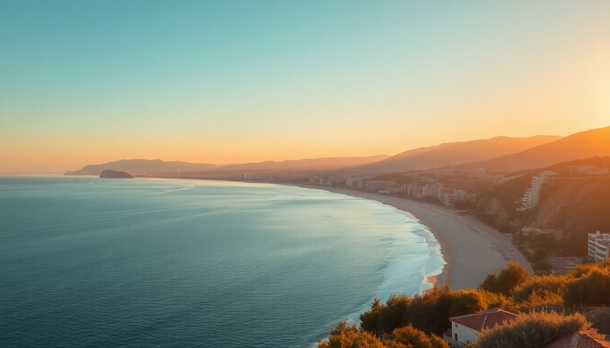

Best Beaches in Spain: Costa Brava, Costa del Sol & Islands

I spent three weeks driving the Costa Brava, sunning on the Costa del Sol, and island-hopping the Balearics to find beaches that actually deliver. Here’s the unvarnished truth on where to swim, where to skip, and how to avoid the towel-to-towel crowds.
Why is Costa Brava better than Barcelona for beach days?
Barcelona’s city beaches — Barceloneta, Bogatell — are fine for a quick dip between Gaudí tours, but they’re packed, the water’s hazy, and you’re sharing sand with pickpockets. The real payoff is a 90-minute train or rental-car drive north into Costa Brava.
The coastline from Blanes up to Cadaqués is a series of rocky coves called calas. Water clarity is dramatically better. We spent an afternoon at Cala Sa Tuna near Begur — a tiny pebble inlet with turquoise water and a single chiringuito (beach bar) serving grilled sardines. No lounge-chair rental racket, just locals and a few savvy tourists.
Best Costa Brava beaches to target:
- Cala Montjoi — accessed via a dirt road; the water is absurdly clear. Pack lunch.
- Platja de Castell near Palamós — a long, naturist-friendly beach backed by pine forest.
- Cala Pedrosa in Cap de Creus — wind-sheltered cove with white pebbles and zero development.
- Lloret de Mar — skip the main strip; head 10 minutes east to Cala Canyelles for family-friendly sand with rental umbrellas.
What’s the real difference between Marbella and the rest of Costa del Sol?
Marbella is the Costa del Sol’s polished showpiece — manicured, expensive, and very Mediterranean-glam. The beachfront along the Paseo Marítimo is lined with chiringuitos that serve €18 salads and €5 cañas. The sand at Playa de la Fontanilla is wide, clean, and raked daily. It’s not wild, but it’s reliable.
The real insider move is driving 15 minutes east to Elviria or Playa de Cabopino. Cabopino has a small dune system and a laid-back crowd. We ate grilled octopus at Chiringuito El Mero — plastic chairs, sand on the floor, and the best espetos (sardines grilled on a stick) I had in Andalusia.
What to know before you go:
- Puerto Banús — the marina beach is a zoo. Overpriced sunbeds, influencers filming on jet skis. Avoid for swimming, fine for people-watching.
- Playa de la Venus in central Marbella — tiny, but good for a late-afternoon swim after sightseeing.
- Nikki Beach — if you want the scene, book a daybed in advance. Otherwise, the public beach right next to it is the same water for free.
- Parking is a nightmare in July. Use the Marbella Park underground garage near the old town and walk 10 minutes.
Which Ibiza beaches actually live up to the hype?
Ibiza’s reputation is built on clubs, but the beaches are legitimately world-class — if you know where to go. The north and east coasts have the best water. The west coast catches sunset crowds and inflated prices.
Cala d’Hort delivers on the view of Es Vedrà — that mystical rock island. The beach itself is pebbly and small, but swimming out toward the rock feels otherworldly. Go at 9 a.m. before the tour vans arrive.
Cala Comte is the poster child for Ibiza’s turquoise water. The water is shallow, warm, and brilliantly clear. Sunbeds cost €40-60 for two, and the restaurant Sunset Beach serves decent paella at eye-watering prices. Pack a towel and sit on the rocks to the right of the main beach for free.
For solitude:
- Cala Xarraca — a rocky cove on the north tip. Mud baths in the cliffs, very few tourists, no services.
- Cala d’en Serra — a 20-minute hike down from the road. No sunbeds, no bar, just deep blue water and silence.
- Benirràs — famous for the Sunday drum circles at sunset. It’s a scene, but the bay is beautiful. Arrive before 4 p.m. or you won’t find parking.
What’s the best Mallorca beach for non-touristy swimming?
Mallorca is huge — 550 kilometers of coastline. The south and east are developed with resort beaches. The north (Serra de Tramuntana) has dramatic cliffs and hidden coves. The west is windier and less crowded.
Cala Deià is the one I keep going back to. It’s a narrow pebble cove at the base of the village of Deià, framed by terraced olive groves. The water is deep and cold even in August. There’s no sand, no sunbed rental, and no bar — just a steep path down and the sound of waves echoing off the cliffs. I swam there for an hour and saw maybe eight other people.
Other Mallorca standouts:
- Cala Varques — a wild beach near Porto Cristo. No road access; park on the dirt shoulder and walk 20 minutes. Bring water and snorkel gear.
- Playa de Muro in Alcúdia — long, shallow, family-friendly. Best for kids. Rent a kayak from Kayak Mallorca at the east end.
- Cala Llombards — a postcard cove with soft sand and a small cave. Gets packed by noon, but the water is perfect.
- Es Trenc — Mallorca’s “Caribbean” beach. It’s beautiful but now has paid parking and a shuttle bus. Go early or stay late.
When is the best time to visit these beaches?
June and September are the sweet spots. Water temperatures hit 22-24°C, crowds are manageable, and prices at hotels like Hotel Artemide in Barcelona or Gran Hotel Miramar in Marbella drop 30-40% from August peaks.
July and August are brutal on the Costa del Sol (40°C heat, wall-to-wall towels) and expensive in Ibiza (€150 for a basic hotel room). Mallorca is slightly better because the island is larger — you can escape to the north coast.
Month-by-month breakdown:
- May — water is cold (18°C), but beaches are empty. Good for hiking Costa Brava coastal paths.
- June — ideal. Warm days, cool evenings, no jellyfish yet.
- July-August — peak chaos. Book everything 3 months ahead. Avoid Marbella’s main beach on weekends.
- September — best balance. Water still warm, kids back in school, sunset dinners at Es Molí de Deià without a reservation.
- October — risky. Weather can be perfect or rainy. The Balearics stay warm longer than Costa Brava.
FAQ
Is it worth renting a car for beach hopping in Spain? Yes, especially for Costa Brava and Mallorca. Buses serve main towns but miss the tiny coves. In Ibiza, a car is essential for Cala Xarraca and Cala d’en Serra. Marbella is fine with taxis and the local train to Fuengirola. Just watch for summer parking fees — many coves charge €5-10 for a spot.
Which beach is best for families with young children? Playa de Muro in Mallorca is the safest bet — shallow water, lifeguards, and a wide sandy slope. On Costa Brava, Platja de Castell near Palamós has calm water and a playground. In Marbella, Playa de la Fontanilla has gentle waves and easy access to bathrooms and cafés.
Are there nude beaches in Spain? Yes, and they’re common. Platja de Castell in Costa Brava and Es Trenc in Mallorca are officially clothing-optional. Cala Varques is unofficially naturist. In Ibiza, the rocky areas around Cala d’Hort are popular with nude swimmers. Just don’t make a big deal of it — Spaniards treat nudity casually.
Conclusion
- Costa Brava wins for water clarity and wild coves, but you need a car or taxi from the train station.
- Marbella is the most convenient beach base for families or luxury travelers — sand is groomed, restaurants are solid, parking exists.
- Ibiza delivers stunning water and sunset views, but avoid the south-coast club beaches unless that’s your scene.
- Mallorca has the most variety — north for solitude, east for calm coves, south for resort comfort.
- June and September are the only months worth booking unless you thrive on August chaos.